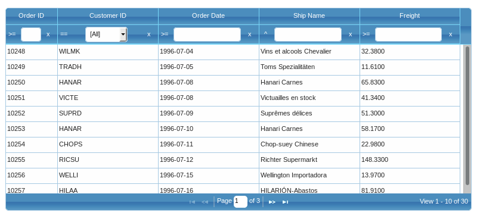
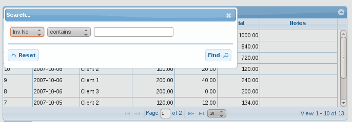
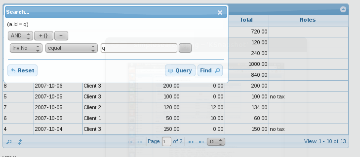
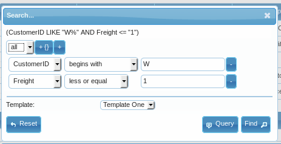
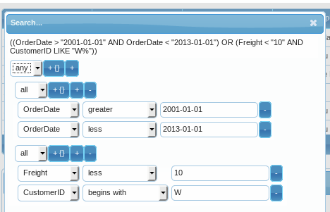
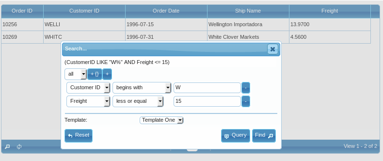

Searching
¶Searching is a way of querying data from the server and local grid using specified criteria.
Configuration¶
The columns in the grid can be used as the basis for a search form to appear above, below, or in place of, the grid.
There are following approaches:
- toolbar searching
- single field searching
- complex approach involving many fields and conditions - advanced searching
- search on all fields (local only)
- column menu search - see Column menu
These approaches use common options from Guriddo jqGrid and so can be called only on an already-constructed grid.
All search methods (except column menu search) are located in the grid.filter.js module
All search modules uses the following definition from language file (English file).
$.jgrid.regional["en"] = { ... search : { caption: "Search...", Find: "Find", Reset: "Reset", odata: [{ oper:'eq', text:'equal'}, { oper:'ne', text:'not equal'}, { oper:'lt', text:'less'},{ oper:'le', text:'less or equal'},{ oper:'gt', text:'greater'},{ oper:'ge', text:'greater or equal'},{ oper:'bw', text:'begins with'},{ oper:'bn', text:'does not begin with'},{ oper:'in', text:'is in'},{ oper:'ni', text:'is not in'},{ oper:'ew', text:'ends with'},{ oper:'en', text:'does not end with'},{ oper:'cn', text:'contains'},{ oper:'nc', text:'does not contain'},{ oper:'nu', text:'is null'},{ oper:'nn', text:'is not null'}, {oper:'bt', text:'between'}], groupOps: [{ op: "AND", text: "all" },{ op: "OR", text: "any" }], operandTitle : "Click to select search operation.", resetTitle : "Reset Search Value", addsubgrup : "Add subgroup", addrule : "Add rule", delgroup : "Delete group", delrule : "Delete rule" }, ... }
These options will be explained in the search methods.
colModel search options¶
As of 3.5 release Guriddo jqGrid uses a common search options that can be used on every search method. Below is a list of these options that should be set in colModel. Note that some options are not applicable for particular method. The used options on particular method will be explained in the method description
| Option | Type | Description | Default |
|---|---|---|---|
| search | boolean | Determines if the field can be searched. | true |
| stype | string | Determines the input search type of the field. Can be 'text' - also a input element with type text is created, 'select' - a select element is created and 'custom' to create a user defined search type element - see searchoptions custom_element and custom_value properties. Other search types are not supported. | text |
| searchoptions | object | Object which contain definition, events and other properties for the searched field. See below | |
| searchrules | object | Object which contain additional conditions for validating user input. See below | |
| sorttype or searchtype |
string | Both options are equivalent, but sorttype have higher priority. When in local mode (datatype = local) this causes correct sorting and searching for the appropriate types. Possible values: int/integer - for sorting integer float/number/currency - for sorting decimal numbers date - for sorting date (see datefmt parameter) text* - for text sorting. Setting this property to allowed value in colModel options causes single and advanced searches to construct allowed operations for that field. This is valid only if the sopt parameter is not set. Commonly we have two type settings - numeric fields and text fields. For numeric fields default settings is : ['eq', 'ne', 'lt', 'le', 'gt', 'ge', 'nu', 'nn', 'in', 'ni'], for text fields these are: ['eq', 'ne', 'bw', 'bn', 'ew', 'en', 'cn', 'nc', 'nu', 'nn', 'in', 'ni']. |
text |
searchoptions¶
The searchoptions object have the following properties.
| Option | Type | Description |
|---|---|---|
| buildSelect | function | This option have sense only if the dataUrl parameter is set. In case where the server response can not build the select element as required above, you can use your on function to build the select. The function should return a string containing the select and options value(s) as described in dataUrl option. Parameter passed to this function is the server response |
| cacheUrlData | boolean | When set to true prevent multiple ajax calls when search filed is build-ed via dataUrl (advanced searching). In this case the data is loaded only once. Default false. |
| clearSearch | boolean | When set to false the X icon at end of search field which is responsible to clear the search data is disabled. The default value is true and is used in toolbar searching. |
| custom_element | function | This function create user defined search element when the colModel stype options is set to 'custom'. The function should return string or jQuery object which will be used for searching. To the returned element automatically is added id and name attributes. The function can accept two parameters - value and the search options from colModel. To get or set search value refer to the custom_value function below. |
| custom_value | function | The function is responsible to get and set value of the user defined element when a search is performed. Function has two parameters - the created element from custom_element function and the type of operation which is applied. The operation type can be 'get' or 'set'. Use get to return a value when a search button (or enter) is activated and set when search values are cleared and default should be set. |
| dataEvents | array | List of events to apply to the data element; uses $("#id").on(type, [data], fn) to bind events to data element. Should be described like this: dataEvents: [{ type: 'click', data: { i: 7 }, fn: function(e) { console.log(e.data.i); }}, { type: 'keypress', fn: function(e) { console.log('keypress'); } } ] |
| dataInit | function | If set this function is called only once when the element is created. To this function we pass the element object.dataInit: function(elem) { do something } Use this function to attach datepicker, time picker and etc. Example: dataInit : function (elem) { $(elem).datepicker(); } |
| dataUrl | string | This option is valid only for the elements of type select - i.e stype:'select'. The option represent the url from where we load the select element. When this option is set the element will be filled with values from the ajax request. The data should be a valid html select element with the desired options. By example the request should contain <select><option value="1">One</option> <option value="2">Two</option></select>. This is called only once in filterToolbar method and every time in single and advanced searching. To cache the data use cacheDataUrl option - see above. The ajax options when dataUrl is used can be overwriten using the grid parameter ajaxSelectOptions. When the ajax call is made to the server is posted a object (data parameter) which contain the searchoptions plus the { id: 'dynamic_id', name : 'name_from_colModel', oper : 'search'} |
| defaultValue | string | If not empty set a default value in the search input element. The value is only set and does not perform automatic search. |
| delimiter | string | Used when the value option is a string and delimit the different key:value pair in the string. The default option is ";" |
| searchhidden | boolean | By default hidden elements in the grid are not search-able . In order to enable searching when the field is hidden set this option to true |
| searchOperMenu | boolean | Available only in toolbar search method. The option enable/disable the search operators menu for particular field in colModel. The option work with global searchOperator option in toolbar search method. |
| searchtitle | string | The option work only in toolbar search method when the searchOperator option is true and the searchOperMenu is true for the field. Set a title for a search operator menu for the column to be used when mouse over the element or if not set the more common operandTitle option from language file is used. |
| separator | string | Used when the value option is a string and separate the key and value of the key:value pair. Default value is ":" |
| sopt | array | This option is used only in advanced, single and toolbar searching and determines the operation that is applied to the element. If not set all the available options will be used. When used in toolbar searching the first element is used. The available option are: ['eq', 'ne', 'lt', 'le', 'gt', 'ge', 'bw', 'bn', 'in', 'ni', 'ew', 'en', 'cn', 'nc'] The corresponding texts are in language file (see odata option) and mean the following: ['equal', 'not equal', 'less', 'less or equal', 'greater', 'greater or equal', 'begins with', 'does not begin with', 'is in', 'is not in', 'ends with', 'does not end with', 'contains', 'does not contain'] The elements in sopt array can be mixed in any order. |
| value | mixed | The option is used only for stype select and defines the select options in the search dialogs. When set for stype select and dataUrl option is not set, the value can be a string or object. If the option is a string it must contain a set of value:label pairs with the value separated from the label with a colon (:) separator and ended with(;) delimiter. The string should not end with a (;)- searchoptions : {value : "1:One;2:Two" }. If set as object it should be defined as pair value:name - searchoptions : {value : {1:'One',2:'Two'} } |
Note
When the dataUrl in searchoptions object is not used for the search type select, the definitions for the select are taken first from searchoptions value property and if this is not defined a editoptions value property is used- i.e editoptions: {value:"1:one;2:two,…""}. See below how to use these options in different search methods.
Below is example on how to attach a jQueryUI datepicker to a date field. Before to use this example, please be a sure you have loaded the jQueryUI library, which includes datapicker module.
<script> jQuery("#grid_id").jqGrid({ ... colModel: [ ... { name: 'price', index: 'price', search: true, stype: 'text', datefmt : 'Y-m-d' searchoptions: { dataInit: datePick, title: 'Select Date'} }, ... ] ... }); datePick = function(elem) { jQuery(elem).datepicker({ dateFormat: "yy-mm-dd" }); } </script>
To synchronize format in jqGrid and datepicker a dateFormat option is used in datepicker. Note the difference in descriptions - Guriddo jqGrid uses PHP like date formatting, while datepicker another one.
searchrules¶
This option add additional properties to the search-able element and should be used in colModel. Mostly it is used to validate the user input before submitting the value(s) to the server. Syntax:
<script> jQuery("#grid_id").jqGrid({ ... colModel: [ ... {name:'price', ..., searchrules:{required:true....}, search:true }, ... ] ... }); </script>
Warning
The searchrules are used only in the searching dialog (searching and advanced searching) and not in the other search methods.
All error messages are located into the language file of edit.msg property. Bellow is the English part of the messages:
$.jgrid.regional["en"] = { edit : { addCaption: "Add Record", ... msg: { required:"Field is required", number:"Please, enter valid number", minValue:"value must be greater than or equal to ", maxValue:"value must be less than or equal to", email: "is not a valid e-mail", integer: "Please, enter valid integer value", date: "Please, enter valid date value", url: "is not a valid URL. Prefix required ('http://' or 'https://')", nodefined : " is not defined!", novalue : " return value is required!", customarray : "Custom function should return array!", customfcheck : "Custom function should be present in case of custom checking!" } }, ... }
These messages can not be overwritten dynamically.
The searchrules object have the following properties
| Option | Type | Description |
|---|---|---|
| required | boolean | (true or false) if set to true, the value will be checked and if empty, an error message will be displayed. |
| number | boolean | (true or false) if set to true, the value will be checked and if this is not a number, an error message will be displayed. |
| integer | boolean | (true or false) if set to true, the value will be checked and if this is not a integer, an error message will be displayed. |
| minValue | number(integer) | if set, the value will be checked and if the value is less than this, an error message will be displayed. |
| maxValue | number(integer) | if set, the value will be checked and if the value is more than this, an error message will be displayed. |
| boolean | if set to true, the value will be checked and if this is not valid e-mail, an error message will be displayed | |
| url | boolean | if set to true, the value will be checked and if this is not valid url, an error message will be displayed |
| date | boolean | if set to true a value from datefmt option is get (if not set ISO date is used) and the value will be checked and if this is not valid date, an error message will be displayed |
| time | boolean | if set to true, the value will be checked and if this is not valid time, an error message will be displayed. Currently we support only hh:mm format and optional am/pm at the end |
| custom | boolean | if set to true allow definition of the custom checking rules via a custom function. See below |
| custom_func | function | this function should be used when a custom option is set to true. Parameters passed to this function are the value, which should be checked and the name - the property from colModel. The function should return array with the following parameters: first parameter - true or false. The value of true mean that the checking is successful false otherwise; the second parameter have sense only if the first value is false and represent the error message which will be displayed to the user. Typically this can look like this [false,"Please enter valid value"] |
More about searching¶
- All search modules uses the url parameter in grid to perform the search. In some methods there is additional separate option for the url which can be used too.
- When the search is performed the postData array is filled with the needed data for the search.
- The grid parameter search in grid options is set to true in order to indicate the searching. Server side the name of the parameter set in postData is _search (note the difference) which can be obtained using the GET or POST data array. Use option prmNames to set another name for posting to server.
- When the grid is triggered using the refresh button in Navigator the search option is set to false.
- Every search method creates its own method to clear the searched data from postData array.
- Searching is possible too if local data is used.
- When posting to the server or search locally, we try to pass, not the name, but the index set in colModel. When the index is not found we use the name.
- When datatype is local serch is performed by index set in colModel. To force search by name use useNameForSearch grid option
Toolbar searching¶
This method construct searching creating input elements just below the header elements of the grid. When the header elements are re sized the input search elements are also re sized according to the new width.
The method uses the url option in grid to perform a search to the server and has his own one.
When the search is activated, an object of type name:value is posted to the server. Note that this object is added to the postData parameter. Posted are fields that have an entered value. When we clear the search form, the values are deleted from the postData array. When posting to the server, we try to pass, not the name, but the index set in colModel. When the index is not found we use the name. Additionally, we add a _search=true to the posted data to the server and grid options search is set to true.
Calling convention¶
... jQuery("#grid_id").jqGrid('filterToolbar',options); ...
Where :
- grid_id is the id of already constructed grid
- options is a object containing different configuration setting. See below
This command will create a search elements something like this:

This method uses the definitions for searching from colModel. See Configuration
The method uses the following properties from language file.
$.jgrid.regional["en"] = { ... search : { ... odata: [{ oper:'eq', text:'equal'}, { oper:'ne', text:'not equal'}, { oper:'lt', text:'less'},{ oper:'le', text:'less or equal'},{ oper:'gt', text:'greater'},{ oper:'ge', text:'greater or equal'},{ oper:'bw', text:'begins with'},{ oper:'bn', text:'does not begin with'},{ oper:'in', text:'is in'},{ oper:'ni', text:'is not in'},{ oper:'ew', text:'ends with'},{ oper:'en', text:'does not end with'},{ oper:'cn', text:'contains'},{ oper:'nc', text:'does not contain'},{ oper:'nu', text:'is null'},{ oper:'nn', text:'is not null'}, {oper:'bt', text:'between'}], operandTitle : "Click to select search operation.", resetTitle : "Reset Search Value", ... }, ... }
Toolbar search options¶
The options in filterToolbar method are:
Note
All events (Type function) in the table below has a triggered event which can be used. The name is set below to the option event
| Option | Type | Description | Default |
|---|---|---|---|
| afterClear jqGridToolbarAfterClear |
function | event which fires after clearing entered values (i.e., clearToolbar activated) | null |
| afterSearch jqGridToolbarAfterSearch |
function | event which fires after a search | null |
| autosearch | boolean | Search is performed according to the following rules: for text element when a Enter key is pressed (searchOnEnter is true) or while inputting values and search is performed (searchOnEnter is false). For select element when the value changes. The search parameter in grid is set to true and ajax call is made. | true |
| autosearchDelay | integer | The delay in milliseconds after which the search data is posted to the server in case if autosearch set to true and searchOnEnter is false | 500 |
| beforeClear jqGridToolbarBeforeClear |
function | event which fires before clearing entered values (i.e. clearToolbar is activated).It is called before clearing the data from search elements. If the event return true triggering does not occur. In this case you can construct your own search parameters and trigger the grid. The triggered event should return the string 'stop' in order not to trigger the grid. Any other return value causes triggering. | null |
| beforeSearch jqGridToolbarBeforeSearch |
function | event which fires before a search. It is called before triggering the grid. If the event return true triggering does not occur. In this case you can construct your own search parameters and trigger the grid to search the data. The triggered event should return the string 'stop' in order not to trigger the grid. Any other return value causes triggering. | null |
| defaultSearch | string | The option determines the default search operator when a search is performed. If any valid option is set, then it will be used for the default operator in all fields. See Search Configuration sopt array here for the available options | bw |
| errorcheck | boolean | if searchrules are defined this turn on of error checking. If there is a error in the input the filter is not posted to the server and a error message appear. | true |
| groupOp | string | This option is valid only if the option stringResult is set to true and determines the group operation. Can have values AND and OR. Advanced searching | AND |
| groupOpSelect | string | The option apply only on search fields which are selects and have a multiselect option. The selected values in multiselect are grouped with this operator between them. Can be OR or AND. | OR |
| odata | object | Defines the long texts for the particular operations when searching. The default object is in language file and can be found as $.jgrid.regional['xx'].search.odata - see Configuration. The default values are: [{ oper:'eq', text:'equal'},{ oper:'ne', text:'not equal'},{ oper:'lt', text:'less'},{ oper:'le', text:'less or equal'},{ oper:'gt', text:'greater'},{ oper:'ge', text:'greater or equal'},{ oper:'bw', text:'begins with'},{ oper:'bn', text:'does not begin with'},{ oper:'in', text:'is in'},{ oper:'ni', text:'is not in'},{ oper:'ew', text:'ends with'},{ oper:'en', text:'does not end with'},{ oper:'cn', text:'contains'},{ oper:'nc', text:'does not contain'}] | |
| onClearSearchValue jqGridToolbarClearVal |
function | the event is triggered after the clear icon (see searchoption clearSearch) is clicked (near the search field) and before triggering the grid in case autosearch is true. Parameters passed to this event are: the search element, column index, searchoptions, default value. | null |
| operands | object | The short text operation which is displayed to the user when a operation button is clicked. By example for equal we display '=='. The default setting of this object is:{ "eq" :"==", "ne":"!", "lt":"<", "le":"<=", "gt":">", "ge":">=", "bw":"^", "bn":"!^", "in":"=", "ni":"!=", "ew":"\|", "en":"!@", "cn":"~", "nc":"!~", "nu":"#", "nn":"!#", "bt":"..."}.Changes have effect only if the value symbol is changed. See searchOperators option |
|
| operandTitle | string | This options is valid only when searchOperators is true. It appear when the user hover with a mouse to the operation button (default for all search fields). This can be overwritten with option searchtitle in searchoptions in colModel. The default text is taken from the language file | |
| resetIcon | string | String which appear near the search field to perform clearing the search value. See clearSearch in colModel searchoptions | 'x' |
| restoreFromFilters | boolean | If set to true the method read the existing search data (postData object) when creating the toolbar search and try to restore it so that the toolbar search fields have the values of the previous search. Useful for initialization of the grid with filtered data. | false |
| searchOnEnter | boolean | Determines how the search should be applied. If this option is true see the autosearch option. If the option is false then the search is performed immediately when the user pres some character. | true |
| searchOperators | boolean | When set to true allows the user to select search operations for particular field when searching. The click operations are created near the search field. In this case possible search operators that can appear can be configured with sopt option in searchoptins in colModel. | false |
| splitSelect | string | String which delimit the selects in multiselect mode | ',' |
| stringResult | boolean | Determines how to post the data on which we perform searching. When the this option is false the posted data is in key:value pair, if the option is true, the posted data is equal on those as in searchGrid method Advanced searching. If this option is set to true the resulting search data that is posted to the server is string. | false |
| url | string | With this string it is possible to overwrite the url parameter used in grid to perform the search | empty |
Note
The sopt option in searchoptions can be used to set a different operator for the particular field in colModel.
Other toolbar methods¶
destroyFilterToolbar()
Removes the filter toolbar complete from the grid unbinding all events
parameters
returns
jqGrid object
refreshFilterToolbar( object options )
This method only refresh the toolbar filter and does not use reload to reload data. It loads the values from filters parameter in postData
parameters
- object options - set of options with default values
options = { filters : "", onClearVal : null, onSetVal : null }
- filters - if not set is read from postData.filtes property. Can be used for custom refresh.
- onClearVal - event which occur after the search values are cleared. The event is executed on every field.
- onSetVal - event which occur after the refreshed values is set. Executes on every field.
returns
jqGrid object
Additional methods for toolbar searching are available for using.
Warning
The methods below can not be used with the jqGrid API - they must be called like this:
... var sgrid = $("#grid_id")[0]; sgrid.triggerToolbar();
clearToolbar( boolean trigger )
Clears the toolbar search values, set the default one (if any) and reloads the grid depending on trigger parameter. The search grid parameter is set to false.
parameters
- boolean trigger - if the parameter is set to false the grid is not triggered when the method is executed - only the entered values are cleared.
returns
none
toggleToolbar()
Toggeles the toolbar with the search elements
parameters
returns
none
triggerToolbar()
When this method is called a search is performed, the search parameter in grid becomes true and ajax call is made to the server or a local search is performed
parameters
returns
none
Tooolbar server posting.¶
Toolbar searching can post data to the server two ways according to certain parameters:
- If one of the toolbar option is set to true: stringResult or searchOperators or the grid optiopns parameter datatype is set to local, then the toolbar serch method post the data as string field
- In all other cases the data is posted in name value pair
Single searching¶
Single field searching is a way to search data on one field at a time. When using this method we construct a modal form where the user can select a field and condition to apply the search.

Calling convention¶
<script> ... jQuery("#grid_id").jqGrid('searchGrid', options ); ... </script>
Where
- grid_id is the id of the already constructed grid
- options is an array of settings in name: value pairs format.
Typically when this method is called it launches the modal dialog and makes the grid inaccessible until the dialog is not closed.
This method is the default search method in the navigator if the search is enabled. The search parameters in navigator can be set the same way as the options described below.
<script> ... jQuery("#grid_id").jqGrid({ ... pager : '#gridpager', ... }).jqGrid('navGrid','#gridpager',{view:true, del:false}, {}, // default settings for edit {}, // default settings for add {}, // delete instead that del:false we need this {search_options}, // search options {} /* view parameters*/ ); ... </script>
By default the dialog appears at upper left corner of the grid.
The search dialog has a options overlay (default 10). If this option is set to 0 the cover overlay is disabled and the user can interact with the grid.
Single search options¶
The method uses the common search options and rules from colModel
This method uses the following properties from language file grid.locale-xx and they can be passed in the options array of the search method
$.jgrid.regional["en"] = { ... search : { caption: "Search...", Find: "Find", Reset: "Reset", odata: [{ oper:'eq', text:'equal'}, { oper:'ne', text:'not equal'}, { oper:'lt', text:'less'},{ oper:'le', text:'less or equal'},{ oper:'gt', text:'greater'},{ oper:'ge', text:'greater or equal'},{ oper:'bw', text:'begins with'},{ oper:'bn', text:'does not begin with'},{ oper:'in', text:'is in'},{ oper:'ni', text:'is not in'},{ oper:'ew', text:'ends with'},{ oper:'en', text:'does not end with'},{ oper:'cn', text:'contains'},{ oper:'nc', text:'does not contain'},{ oper:'nu', text:'is null'},{ oper:'nn', text:'is not null'}, {oper:'bt', text:'between'}], ... }, ... }
Note
The events (Type function) in the table below has a triggred event which can be used. The name is set below to the option event. Note that not all events have triggered event equivalent.
| Option | Type | Description | Default |
|---|---|---|---|
| afterChange | function | fires after we change something in the filter - field, operation or value | null |
| afterRedraw | function | This function if defined is lunched every time the filter is redrawed - the filter is redraw-ed every time when we add or delete rules or fields To this function we pass the search parameters as parameter. In single search it is lunched once when created and when the reset button is pressed. | null |
| afterShowSearch jqGridFilterAfterShow |
function | This event fires (if defined) every time after the search dialog is shown. Parameter passed to this event is the filter DOM element. | null |
| beforeShowSearch jqGridFilterBeforeShow |
function | This event fires (if defined) every time before the search dialog is shown. If the event return false the search dialog is not shown. | null |
| buttons | array | Defines a custom buttons in the searchForm. Every element into the array is a object (button) with the following properties: icon - defines a icon according to the CSS framework used. side - left or right - the position of the icon text - Text to appear in the button position - the position of the button - last or first click - function that is executed when the button is click. To the click function is passed the search form, search parameters and click event id - id to identify the button. If not set the jqGrid assing it internally using the jqGrid randId function. |
empty array |
| caption | string | The caption of the search form | lang file |
| closeAfterReset | boolean | If set to true this closes the search dialog after the user apply a reset - i.e. click on reset button | false |
| closeOnEscape | boolean | If this option is set to true the search dialog will be closed if the user press ESC key | false |
| closeAfterSearch | boolean | If set to true this closes the search dialog after the user apply a search - i.e. click on Find button | false |
| drag | boolean | Enables or disables dragging of the modal | true |
| errorcheck | boolean | if searchrules are defined this turn on of error checking. If there is a error in the input the filter is not posted to the server and a error message appear. | true |
| Find | string | The text in the find button | lang file |
| height | mixed | Defines the height of the search dialog | auto |
| jqModal | boolean | If set to true uses jqModal plugin (if present) to create the dialogs. If set to true and the plugin is not present jqGrid uses its internal function to create dialog | true |
| layer | string | If defined this should be a valid id in the DOM. Also if this option is set the filter is inserted as child of this element | null |
| left | integer | the initial left position of modal dialog. The default value of 0 mean the left position from the upper left corner of the grid. When jqModal option is true (see below) and jqModal plugin is present any value different from 0 mean the left position from upper left corner of the window. | 0 |
| loadDefaults | boolean | If set to true the method load the existing filtered data stored in filters property in postData object | true |
| modal | boolean | Is set to true the search dialog becomes modal | false |
| odata | array | Translation strings that corresponds to the sopt options | lang file |
| onClose | function | If defined this event fires when the dialog is closed. Can return true or false. If the event return false the dialog will not be closed | null |
| onInitializeSearch jqGridFilterInitialize |
function | This event occurs only once when the modal is created | null |
| onReset | function | If defined this function fire if reset button is activated | null |
| onSearch | function | If defined this event fires when the search Button is clicked. | null |
| overlay | integer | If this option is set to 0 the overlay in grid is disabled and the user can interact with the grid while search dialog is active | 30 |
| recreateFilter | boolean | when set to true the form is recreated every time the search dialog is activated with the new options from colModel (if they are changed) | false |
| resize | boolean | Enables or disables resizing of the modal | true |
| Reset | string | The text for the clear button | lang file |
| searchOnEnter | boolean | Determines whether search should be applied on pressing Enter key. | false |
| showOnLoad | boolean | This option is valid only in navigator options. If set to true the dialog appear automatically when the navigator is constructed for first time | false |
| sField | string | The name of the property which will be posted as a name for the searched field. See predefined fields | searchField |
| sOper | string | The name of the property which will be posted as a operation for the searched field. See predefined fields | searchOper |
| sopt | array | Use this option to set common search rules. If not set all the available options will be used. All available option are: ['eq','ne','lt','le','gt','ge','bw','bn','in','ni','ew','en','cn','nc','nu','nn'] The corresponding texts are in language file and mean the following: ['equal','not equal', 'less', 'less or equal','greater','greater or equal', 'begins with','does not begin with','is in','is not in','ends with','does not end with','contains','does not contain','is null','is not null'] Note that the elements in sopt array can be mixed in any order. | |
| sortStrategy | function | apply a custom sort function for the order of the names that appear. Default order is those from colModel | null |
| sValue | string | The name of the property which will be posted as a value for the searched field. See predefined fields | searchString |
| top | integer | the initial top position of modal dialog. The default value of 0 mean the top position from the upper left corner of the grid. When jqModal option is true (see below) and jqModal plugin is present any value different from 0 mean the top position from upper left corner of the window. | 0 |
| width | integer | Defines the width os the search dialog | 450 |
| zIndex | integer | The starting z-index for the dialog. If you will see the dialog form under another elements or dialogs you should use the parameter with some value higher as default value 950. In the most cases it should be the value higher as 1000 - the default value of jQuery UI dialog. | 950 |
Single search posting¶
This method post the search data to the server only in a Predefined fields format
Advanced searching¶
Advanced searching is a way to search on multiple fields at the same time with different conditions. Advanced searching and single searching use the same method, but with different settings and posting data.
Calling convention¶
<script> ... jQuery("#grid_id").jqGrid('searchGrid', {multipleSearch:true,...} ); ... </script>
Where
- grid_id is the id of the already constructed grid
- multipleSearch:true activates the advanced searching
- … other options set as name:value pair
To set more advanced search do:
<script> ... jQuery("#grid_id").jqGrid('searchGrid', {multipleSearch:true, multipleGroup:true,...} ); ... </script>
- multipleGroup:true activates the more advanced search dialog allowing to add complex group conditions
Typically when this method is called it launches the modal dialog and makes it so the grid inaccessible until the dialog is closed.
This method is not the default search method in the navigator. To enable this you should either set the default search options using the extend method or set it in the navigator in the place of the search options.
The advanced searching can look like this when created:

As can be seen the user can add or delete an unlimited number of conditions to perform the search.
To add a condition the plus button should be pressed.
To delete a condition the minus button should be pressed
Advanced search options¶
The method uses the same options as those from Single Searching plus the following:
This method uses the following properties from language file grid.locale-xx and they can be passed in the options array of the search method
$.jgrid.regional["en"] = { ... search : { caption: "Search...", Find: "Find", Reset: "Reset", odata: [{ oper:'eq', text:'equal'}, { oper:'ne', text:'not equal'}, { oper:'lt', text:'less'},{ oper:'le', text:'less or equal'},{ oper:'gt', text:'greater'},{ oper:'ge', text:'greater or equal'},{ oper:'bw', text:'begins with'},{ oper:'bn', text:'does not begin with'},{ oper:'in', text:'is in'},{ oper:'ni', text:'is not in'},{ oper:'ew', text:'ends with'},{ oper:'en', text:'does not end with'},{ oper:'cn', text:'contains'},{ oper:'nc', text:'does not contain'},{ oper:'nu', text:'is null'},{ oper:'nn', text:'is not null'}, {oper:'bt', text:'between'}], groupOps: [{ op: "AND", text: "all" },{ op: "OR", text: "any" }], addsubgrup : "Add subgroup", addrule : "Add rule", delgroup : "Delete group", delrule : "Delete rule" ... }, ... }
| Option | Type | Description | Default |
|---|---|---|---|
| addsubgroup | string | Title text when the user hover over the button '+' | lang file |
| addrule | string | Title text when the user hover over the button '+{}' | lang file |
| delgroup | string | Title text when the user hover over the button '-' | lang file |
| delrule | string | Title text when the user hover over the button '-{}' | lang file |
| groupOps | array | The array describes the logical condition between the fields - i.e OR or AND. Evey element of the array is object with the following meaning - op property describes the values posted to the server in groupOp item and text property described the text displayed to the user - By example { op: "AND", text: "AND" }. The default value is the first element into the array. It can be set only one element in the array | lang file |
| showQuery | boolean | If set to true shows the query which is generated when the user defines the conditions for the search. Valid only in advanced search. Again with this a button near search button appear which allows the user to show or hide the query string interactively | false |
| sFilter | Determines the name of the posting data to the server. | filters | |
| multipleSearch | boolean If set to true this activates the advanced searching | false | |
| multipleGroup | boolean | If set to true this activates the advanced searching with a possibilities to define a complex conditions. The best way to see what conditions are generated is to use the showQuery options set to true. | false |
| tmplNames | array | Defines the name of the templates used for easy user input - by example like this : ['Template1', 'Template2',…]. See demos at end of this chapter. | null |
| tmplFilters | array | array of objects where every object correspond to the object generated in filters like. The length of this array should correspond to the length of tmplNames array. See demos at end of this chapter. | null |
| tmplLabel | string | If a template is defined a select element appear between the Reset and Find buttons. This is a the text describing the select | Template: |
Some options (not all) and events in advanced and single searching can be extended using the
$.jgrid.filter = {...}
object. The object needs to be set before calling the method.
Advanced search posting¶
This method post the search data to the server only in a String field format
Search all fields¶
This type of searching allow to search on all fields in grid grid data using single input value. This method have effect only if the datatype parameter is local or loadonce parameter is true, which at end set the datatype to local.
Conversions and options¶
<script> ... jQuery("#grid_id").jqGrid('filterInput', value, options ); ... </script>
Where
- string value is the value to be searched
- object options - various options for that search with defaults:
options = { defaultSearch : 'cn', groupOp : 'OR', searchAll : false, beforeSearch : null, afterSearch : null }
- options have the following description
- deafultSearch - determines the default operation in searching. Default is cn contain. The option can have one of the following values defined in odata array (name property) in language file.
- groupOp - Defines how the search criteria can be set between different fields - can be OR or AND . Default is OR which mean that the where clause is like this WHERE field1 ='val' OR field2='val'....
- searchAll - By default the search is applied on fields with search=true parameter in colModel. If set to true the search is applied on all fields independent of the search parameter.
- beforeSearch or triggered event jqGridFilterInputBeforeSearch - the event occur before to apply the search. If the triggered event return 'stop' or the option event return false the search is not performed.
- afterSearch - or triggered event jqGridFilterInputAfterSearch - the event occur after the search is performed.
See examples at end of this chapter.
Posting when searching¶
Depending on the search methods we have three types of posting the searched data to the sever (in case the datatype parameter is not local)
Name value pair¶
This type of searching is available in toolbar searching method only when the option stringResult is set to false.
This type of posting is the simplest one. In this case when a search is activated according to the rules the grid option search is set to true. To the server are posted the fields which have a value on it and additionally a new postdata pair is added _search => true
When posting to the server or search locally, we try to pass, not the name, but the index set in colModel. When the index is not found we use the name.
All these values are added to the postData array.
Let suppose that we have the following grid:
$("#grid_id").jqGrid({ url: "example.php", datatype: "json", mtype: "GET", colModel: [ { name: "invid", index: "invoice_id" width: 55 }, { name: "invdate", index: "Invoice_date", width: 90 }, { name: "amount", width: 80, align: "right" }, { name: "tax", width: 80, align: "right" }, { name: "total", width: 80, align: "right" }, { name: "note", width: 150, sortable: false } ], ... }); $("#grid_id").jqGrid('filterToolbar', { stringResult : false });
and a filterToolbar search method is lunched with option stringResult : false
When the user fill the invdate field with some value like '2017-01-01' and amount field with 200 and press Enter then the following data is added to the postData object
postData : { ... Invoice_date : "2017-01-01", amount : "200", _search : true ... }
and we have the following url:
http://www.myserver.com/example.php?... &Invoice_date=2017-01-01&amount=200&_search=true&...
Note
The posted fields names are get from index property if they available and if not from the name property.
The operation is not posted. This way developer is free to interpret the search data as they want.
Predefined fields¶
This type of searching is used in single searching module.
In this case when the search is activated, jqGrid adds three parameters to postData, respectively to the url (again with _search=true), in name=value pairs:
- searchField, the value comes from the index or name in colModel
- searchString , the value to be searched
- searchOper, the value is the operation of search - see sopt array
The names of these properties can be configured by developer. The corresponding one are in the options of single searching method and the names are sField, sValue, sOper
Using the example from previous chapter if the user select Invoice date and operation equal, then the following is added to the postData object:
postData : { ... searchField : "Invoice_date", searchString : "2017-01-01", searchOper : 'eq', _search : true ... }
and the the url is:
http://www.myserver.com/example.php?...&searchField=Invoice_date&searchString=2017-01-01&searchOper=eq&...
String field¶
This type of posting is available in toolbar searching (when stringResult is true), Advanced searching and searching in column Menu.
When the search data is posted to the server added is only one parameter (again with _search=true) to the url and this is the filters element.
To use this type of searching see the stringResult option in the appropriate methods
The posted data (the postData property filters) can look like this:
filters = { "groupOp":"OR", "rules":[{"field":"a.id","op":"eq","data":"1"}], "groups":[ { "groupOp":"AND", "rules":[{"field":"a.id","op":"eq","data":"2"}], "groups":[...] } ] }
The posted data is a JSON string with the following parameters:
- groupOp - this determines the rules of the search. Can be AND or OR. This option can be changed from the user with the help of the select box near the Reset button. When the user select all (English variant) the AND is set. When the user selects any the OR is set.
- rules - an array with the following options
- field - the field property contains the name of the selected index (or name) from colModel
- op - determines the operation of the searching - see the sopt in the searchoptions
- data - is the entered data to be searched on
- groups - set of other groupOp, rules elements to define a complex search query
Rather than to explain how this string is build-ed a examples will be shown.
In the example below:

the following data will be posted to the server:
postData : { ... "filters" : { "groupOp": "AND", "rules": [ {"field": "CustomerID", "op": "bw", "data": "W"}, {"field": "Freight", "op": "le", "data": "1"} ], "groups":[] } \_search : true ... }
For this example:

the following data will be posted to the server:
postData : { "filters" : { "groupOp": "OR", "rules": [], "groups": [ { "groupOp":"AND", "rules": [ {"field":"OrderDate","op":"gt","data":"2001-01-01"}, {"field":"OrderDate","op":"lt","data":"2013-01-01"} ], "groups":[] },{ "groupOp":"AND", "rules":[ {"field":"Freight","op":"lt","data":"10"}, {"field":"CustomerID","op":"bw","data":"W"} ], "groups":[] } ] }, "_search" : true }
Search examples¶
All fields searching¶
The following example shows how to use the all fields search method when the user type in a single input filed. When the user continue typing new filter values will be show.
The html definition:
... <label for="search_cells"> Search Grid: </label> <input id="search_cells" type="search"/> <table id="jqGrid"></table> <div id="jqGridPager"></div> ...
The JavaScript
$("#jqGrid").jqGrid({ url: 'data.json', mtype: "GET", datatype: "json", colModel: [ { label : "Order ID", name: 'OrderID', key: true, width: 75 , },{ label: "Customer ID", name: 'CustomerID', width: 150, },{ label: "Order Date", name: 'OrderDate', width: 150, sorttype:'date', formatter: 'date', srcformat: 'Y-m-d', stype : 'text', newformat: 'n/j/Y', },{ label : "Ship Name", name: 'ShipName', width: 150, },{ label: "Freight", sorttype: 'number', name: 'Freight', width: 150, }, ], loadonce: true, viewrecords: true, width: 780, height: 250, rowNum: 10, pager: "#jqGridPager" }); var timer; $("#search_cells").on("keyup", function() { var self = this; if(timer) { clearTimeout(timer); } timer = setTimeout(function(){ $("#jqGrid").jqGrid('filterInput', self.value); },0); });
As can be seen we bind a keyup event to the search input field search_cells and when the user type a letter the grid is triggered with the resulting data.
Search using template¶
With this example we demonstrate how we can have a predefined filters, which will simplify the searching. For this purpose we will use tmplNames and tmplFilters in navigator (searchGrid method) .
The html definition:
... <table id="jqGrid"></table> <div id="jqGridPager"></div> ...
The JavaScript
$("#jqGrid").jqGrid({ url: 'data.json', mtype: "GET", datatype: "json", colModel: [ { label : "Order ID", name: 'OrderID', key: true, width: 75 , },{ label: "Customer ID", name: 'CustomerID', width: 150, },{ label: "Order Date", name: 'OrderDate', width: 150, sorttype:'date', formatter: 'date', srcformat: 'Y-m-d', stype : 'text', newformat: 'n/j/Y', },{ label : "Ship Name", name: 'ShipName', width: 150, },{ label: "Freight", sorttype: 'number', name: 'Freight', width: 150, }, ], loadonce: true, viewrecords: true, width: 780, height: 250, rowNum: 10, pager: "#jqGridPager" }); var template1 = { "groupOp": "AND", "rules": [ { "field": "CustomerID", "op": "bw", "data": "W" }, { "field": "Freight", "op": "le", "data": "15"} ] }; var template2 = { "groupOp": "AND", "rules": [ { "field": "ShipName", "op": "eq", "data": "Hanari Carnes" }, { "field": "OrderID", "op": "le", "data": "10255"} ] }; // activate the build in search with multiple option $('#jqGrid').navGrid("#jqGridPager", { // show search button on the toolbar search: true, add: false, edit: false, del: false, refresh: true }, {}, // edit options {}, // add options {}, // delete options { // search options - define multiple search multipleSearch: true, multipleGroup: true, showQuery: true, // set the names of the template tmplNames: ["Template One", "Template Two"], // set the template contents tmplFilters: [template1, template2] } );
Using this code after click on search button and select the Template One we will have the following result.

Note the object definition in template1 and template2.
Tip
If there is a dificulties to define a template object ,then use the following trick to put the correct object.
Define your grid with searching. Open the search dialog and configure manually the needed template in the search dialog. After this push the Find button to make the search. Lunch the debug console and into the params tab see the filters string which is posted. Copy/paste this string in your code.